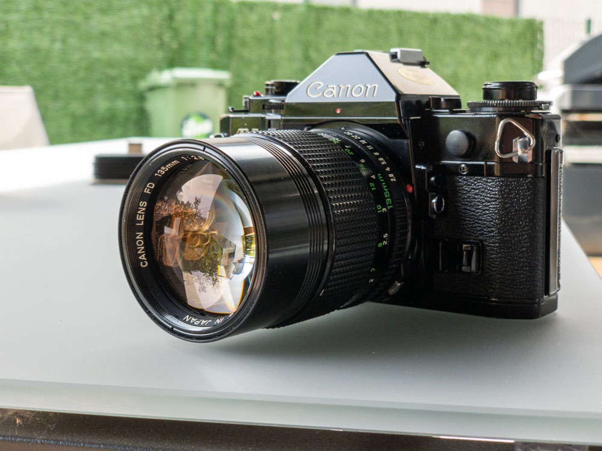

I quickly threw this page together with some of my early experiments with the HDR tech preview in Adobe Camera Raw. I took these photos from my Lightroom library, opened the RAW files in ACR, exported to a small JPEG, turned on the HDR button and saved again. In some cases I did a bit more tweaking, but I didn't spend a whole lot of time on it. I'm sure that if I were to have this tooling in Lightroom I would make a better effort to grade the photos until I got the result that I wanted. This was more of a test to demonstrate the difference in dynamic range and how it presents on various devices
Right now it only seems to display correctly on a Mac with an XDR display in Google Chrome. Support for AVIF and JPEG XL is growing, but showing them with full brightness is still spotty. On an iPad Pro M1 12.9" with an XDR display it doesn't work, at the moment, because Chrome on that device is just a wrapper around WebKit.
This is what I've been waiting for all these years: shooting in RAW has always had the benefit of capturing all of the dynamic range that the sensor had to offer. Some of these pictures are more than ten years old.
Camera's used over the years: Canon 350d, Canon 5D, Canon 1D MkIII, Canon 5D MkII, Canon RP, Canon R6. Not sure if they're all present here.


